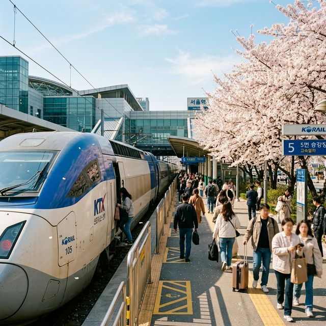

사실상 KTX 공짜 여행: 2026 코레일 '여행가는 봄' 혜택 완전 정복 — KTX 운임 100% 환급부터 테마열차 50% 할인까지
"기차로 봄 여행을 떠나면 운임을 100% 돌려준다." 처음 들으면 믿기 어려운 이 혜택이 실제로 존재합니다. 정부의 '2026 여행가는 봄' 캠페인과 연계해 코레일이
2026년 4월 1일부터 5월 31일까지 시행하는 파격 프로모션입니다. 인구감소지역(전국 42곳)으로 KTX·열차를 타고 여행하면 탑승 운임의 100%를
할인쿠폰으로 돌려주는 이 혜택, 어떻게 신청하고 어떻게 받는지 단계별로 완벽하게 정리해 드립니다. 테마열차 50% 할인, 내일로 패스 2만 원 할인까지 놓치면 손해인 혜택들을 한
자리에서 정복합니다.

▲ 2026 코레일 '여행가는 봄' 프로모션 기간(4월 1일~5월 31일) 동안 인구감소지역으로 향하는 KTX 운임을 100% 돌려받을 수 있습니다.
(ratio 1:1)
1. '여행가는 봄' KTX 100% 환급 혜택이란?
코레일이 2026년 봄을 맞이해 전국 42개 인구감소지역의 여행 활성화를 목적으로 실시하는 대규모 할인 프로그램입니다. 핵심은 단순합니다. 해당 지역으로 열차를 타고
가서, 지정 관광지를 방문한 뒤 QR코드나 디지털 관광주민증으로 방문 인증만 하면 결제한 열차 운임과 동일한 금액의 할인쿠폰을 탑승 후 5일 이내에 지급받는 방식입니다.
쉽게 말해 'KTX 탑승 → 여행지 관광 인증 → 운임 100% 쿠폰으로 페이백'이라는 구조입니다. 돌아오는 기차 표를 이미 예매했다면, 받은 쿠폰을 그 자리에서 다음 여행에 쓸 수도 있습니다. 사실상
기차 운임이 무료인 셈입니다.
📋 2026 코레일 '여행가는 봄' 핵심 혜택 3종 (공식 확정 데이터)
- 🚄 인구감소지역 KTX 운임 100% 환급: 탑승 후 5일 이내 동일 금액 할인쿠폰 지급
- 🚞 테마열차 5개 노선 50% 할인: 동해산타열차·백두대간 협곡열차·서해금빛열차·남도해양열차·정선아리랑열차
- 🎫 내일로 자유여행 패스 2만 원 할인: 전 권종 적용
- 📅 프로모션 기간: 2026년 4월 1일(수) ~ 5월 31일(일) (탑승 기준)
- 🗺️ 대상 지역: 전국 42개 인구감소지역 (강원·충북·전북·경북·충남·전남·경남 등)
2. KTX 100% 환급 단계별 신청 방법 완전 정복
혜택이 아무리 좋아도 신청 방법을 모르면 소용없습니다. 아래 4단계를 순서대로 따라가시면 누구든지 쉽게 혜택을 받으실 수 있습니다.
1
코레일톡 앱 또는 홈페이지에서 '인구감소지역행 자유여행상품' 구매
일반 기차표 예매와 동일하게 코레일 공식 앱 '코레일톡' 또는 korail.com에 접속합니다. 검색창에 '인구감소지역' 또는 '여행가는 봄'을 입력하면 해당 프로모션 상품이 나타납니다.
목적지를 42개 인구감소지역 중 한 곳으로 설정하고 결제합니다.
2
해당 지역 여행 후 지정 관광지 방문
열차에서 내린 뒤 목적지에서 여행을 즐깁니다. 단, 쿠폰 환급을 위해서는 지정된 관광지를 최소 1곳 이상 방문해야 합니다.
3
방문 인증 완료 (QR코드 or 디지털 관광주민증)
현장에서 두 가지 방법 중 편한 것을 선택합니다.
① 코레일톡 QR코드: 앱 내 QR 메뉴 → 관광지 비치된 단말기에 인식
② 디지털 관광주민증: 한국관광공사 앱에서 발급 → 관광지 인증 단말기에 인식
4
탑승 후 5일 이내 열차 운임 100% 할인쿠폰 자동 지급
인증이 완료되면 별도 신청 없이 탑승일로부터 5일 이내에 코레일톡 앱으로 쿠폰이 자동 지급됩니다. 지급된 쿠폰은 다음 열차 예매 시 결제 단계에서 현금처럼
사용 가능합니다.
💡 울릉도 여행자를 위한 특별 혜택 — 인증 불필요!
울릉군의 경우, 코레일톡에서 '레일쉽'(열차+울릉크루즈 선박 연계 상품)을 구매하면 별도의 관광지 방문 인증 없이도 열차 운임 100% 할인쿠폰이 자동
제공됩니다. 울릉도 여행을 계획 중이시라면 반드시 레일쉽 상품으로 구매하세요.
3. 테마열차 5개 노선 50% 할인 — 어디 타야 가장 좋을까?
▲ 코레일 테마열차 5개 노선은 이번 프로모션 기간 동안 운임의 50%를 할인해 줍니다. KTX로 빠르게 이동한 뒤 테마열차로 느리게 즐기는 조합이
최고입니다. (ratio 1:1)
KTX 100% 환급과 별개로, 코레일은 전국 5개 테마열차 운임을 50% 할인하는 혜택도 동시에 제공합니다. 테마열차는 단순한 이동 수단이 아니라 그 자체로 하나의 여행
경험입니다. 창밖 풍경을 감상하며 느리게 이동하는 테마열차 여행은 빠른 KTX와는 전혀 다른 감성을 선사합니다.
코레일 테마열차 5개 노선 기본 정보 (2026 봄 50% 할인 적용)
| 열차 이름 |
운행 구간 |
주요 특징 |
| 동해산타열차 |
청량리 ↔ 동해·강릉 |
동해안 바다 뷰. 겨울~봄 시즌 최고 인기 노선. 해돋이 관람 가능. |
| 백두대간 협곡열차 |
분천 ↔ 철암 |
V-train이라 불리는 협곡 열차. 경북 봉화 오지 협곡 통과. 국내 최고의 비경 노선. |
| 서해금빛열차 |
서울 ↔ 익산·목포 |
서해안 낙조 감상 최적 노선. 간월도·변산반도 연계 여행에 추천. |
| 남도해양열차 |
서울 ↔ 여수·순천 |
S-train. 남해안 봄꽃 여행의 최강자. 순천만 국가정원, 여수 밤바다와 연계. |
| 정선아리랑열차 |
청량리 ↔ 구절리 |
A-train. 강원도 정선 산악 마을 통과. 레일바이크 및 화암동굴 연계. |
🔥 봄 여행 조합 추천 — KTX + 테마열차 더블 혜택
서울 → 강릉 (KTX, 운임 100% 환급) + 강릉 → 분천 방향 환승 이동 후 백두대간 협곡열차 (50% 할인)를 타는 루트가 현재 봄 여행 커뮤니티에서 가장
화제입니다. 두 할인을 동시에 챙길 수 있으며, 경포벚꽃 + 고건 협곡이라는 전혀 다른 두 가지 봄 풍경을 하나의 여행에서 즐길 수 있습니다.
4. 내일로 자유여행 패스 2만 원 할인 — 20대의 선택
만 25세 이하 청년이라면 내일로 패스에도 주목할 필요가 있습니다. '여행가는 봄' 기간 동안 내일로 패스를 전 권종에 걸쳐 2만 원 할인된
가격에 구매할 수 있습니다. 내일로 패스는 일정 기간 동안 코레일 기차를 무제한으로 탑승할 수 있는 자유여행 패스인 만큼, 여러 지역을 순차적으로 여행하는 백패커형 여행자에게 압도적으로 유리합니다.
▲ 모든 혜택 신청은 코레일 공식 앱 '코레일톡'에서 가능합니다. 쿠폰 수령 역시 인증 완료 후 5일 이내 앱으로 자동 발급됩니다. (ratio 1:1)
5. 인구감소지역 42곳 — 어디가 봄에 갈 만할까?
42개 인구감소지역 전체를 나열하는 것보다, 봄 시즌 여행지로 가장 인기 높은 곳을 선별해 드리는 것이 훨씬 실용적입니다. 코레일 이용 편의성과 봄 콘텐츠를 기준으로 추천 여행지를 정리했습니다.
인구감소지역 중 봄 여행 추천 TOP 6 (KTX 100% 환급 대상)
| 지역 |
봄 여행 핵심 콘텐츠 |
KTX 소요 시간 (서울 기준 대략) |
| 강릉 |
경포벚꽃, 안목해변 커피거리, 정동진 일출 |
약 1시간 50분 (KTX) |
| 안동 |
하회마을 유네스코 세계유산, 월영교 야경 |
약 2시간 (KTX) |
| 정선 |
정선아리랑열차 탑승, 화암동굴, 레일바이크 |
약 2시간 20분 |
| 영월 |
동강 뗏목 체험, 별마로 천문대, 청령포 |
약 2시간 (무궁화) |
| 구례 |
지리산 산수유마을, 쌍계사 벚꽃, 섬진강 자전거길 |
약 2시간 30분 (SRT) |
| 순천 |
순천만 국가정원, 낙안읍성, 선암사 봄꽃 |
약 2시간 30분 (KTX) |
6. 예매 시 주의사항 및 꿀팁
- 인기 상품 조기 마감 주의: KTX 100% 환급 자유여행 상품은 수량이 한정되어 있으며 봄 성수기에는 빠르게 마감될 수 있습니다. 코레일톡 앱에서
4월 초에 즉시 예매하는 것이 안전합니다.
- 쿠폰 사용 기한 확인: 지급받은 할인쿠폰에는 사용 기한이 있습니다. 코레일톡 앱의 '내 쿠폰함'에서 반드시 기한을 확인하고, 다음 여행 예매 시 결제 단계에서
적용하세요.
- 테마열차는 별도 예매: 테마열차 50% 할인 혜택은 KTX 100% 환급과 동시에 적용되지 않습니다. 두 혜택을 모두 누리려면 각각 별도 구매해야 합니다.
- 디지털 관광주민증 사전 발급: 관광지 인증 단말기 앞에서 당황하지 않으려면 여행 전날 미리 한국관광공사 앱에서 디지털 관광주민증을 발급해둬야 합니다.
2026년 봄, 기차를 타고 떠나는 여행이 이렇게까지 저렴해진 적이 없었습니다. KTX 운임 100% 환급이라는 사실상의 무료 여행을 선물하는 코레일의 이번 프로모션은 5월 31일까지만 진행됩니다.
봄꽃이 지기 전에, 알뜰하고 알찬 기차 여행을 떠나보세요. 🚄🌸
👉 함께 읽으면 좋은 글:
서귀포 유채꽃축제 & 녹산로 렌터카 드라이브 완벽 가이드
데이터 출처: 코레일(한국철도공사) 공식 홈페이지 / 연합뉴스 / 뉴스핌 / 여행가는 달 공식 홈페이지 2026년 봄 프로모션 공식 발표 내용 종합
#코레일여행가는봄
#KTX100환급
#인구감소지역여행
#테마열차할인
#내일로패스
#2026봄여행
#코레일톡
#기차여행혜택
#봄여행꿀팁
#레일쉽울릉도
#강릉KTX
#국내여행4월
#여행가는달2026